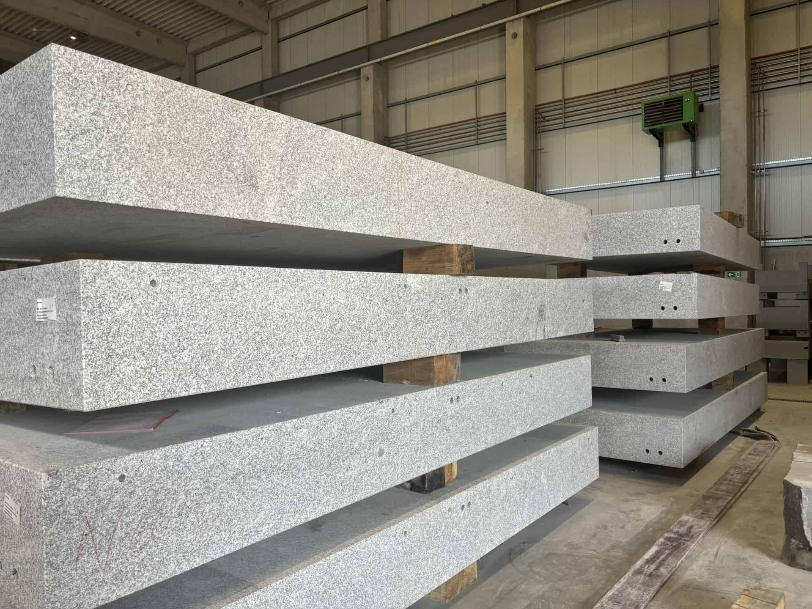
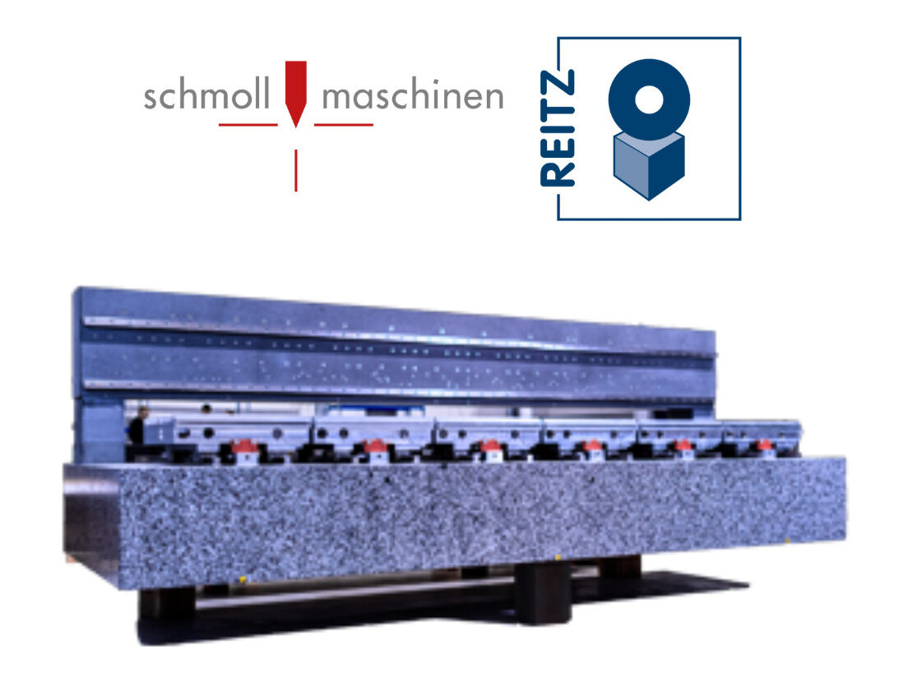

Reitz-natursteintechnik Production Warehouse in Aßlar, Germany.
In the world of high-precision machinery, every component plays a crucial role. At Schmoll, granite is more than just a material—it is the very foundation upon which the performance of our PCB manufacturing machines is built. As a stabilizing force, granite dramatically reduces oscillation, increases precision, and lowers the margin of error. When combined with our advanced engineering, this ensures that our best PCB manufacturing machines deliver unparalleled accuracy and consistency. The granite used in our machines is provided by Reitz Natursteintechnik, a trusted partner whose craftsmanship has helped us achieve global success.
Granite’s natural density and stability make it an ideal material for high-precision PCB manufacturing machines. By significantly minimizing mechanical vibrations, granite ensures that our machines operate with the highest levels of precision, even under the most demanding conditions. This translates to better PCB production accuracy, making it possible for our customers to achieve exceptional results with minimal errors.
In industries like electronics manufacturing, where even the smallest deviation can result in costly errors, having precision PCB manufacturing machines that guarantee consistent results is critical. At Schmoll, we pride ourselves on offering some of the best PCB manufacturing machines, known for their durability, performance, and precision.
{kind=link}

Close-up on the Granite used by Schmoll Maschinen’s Products
The granite used in every Schmoll machine is sourced from Reitz Natursteintechnik, a partner we have worked with for years. This collaboration goes beyond a simple supplier-client relationship—it’s built on trust and friendship between the company’s Presidents. Together, we have pushed the boundaries of innovation, bringing high-speed PCB manufacturing equipment to markets across the globe.
Though the granite used in our machines may vary in color—ranging from light gray to darker shades—this has no impact on the performance of our best PCB manufacturing systems. Regardless of color, each slab is tested to meet the same rigorous standards, ensuring that every automated PCB manufacturing machine provides the stability required for high-precision production.
{kind=link}

Granite Body Customised for Each Schmoll Maschinen’s Machine by Reitz.
When choosing a PCB manufacturing machine from Schmoll, clients are guaranteed the same level of precision, regardless of the granite’s appearance. This consistency is what makes Schmoll a leader in high-precision PCB manufacturing machines, enabling our clients to maintain competitive advantages in fast-paced industries.
Our commitment to precision is matched by our focus on innovation, making our top PCB manufacturing machinessuitable for both low and high-volume production environments. Whether you’re in need of automated PCB manufacturing systems or high-speed manufacturing equipment for electronics, our solutions are designed to help you achieve superior results with minimal margin for error.
Granite is more than just a material used in our machines; it’s a stabilizer that ensures Schmoll delivers the best PCB manufacturing machines. Backed by years of collaboration with Reitz Natursteintechnik, we are proud to offer machinery that is reliable, precise, and built to last. Whether it’s automated PCB manufacturing systems or high-volume production equipment, Schmoll continues to set the standard in precision manufacturing.